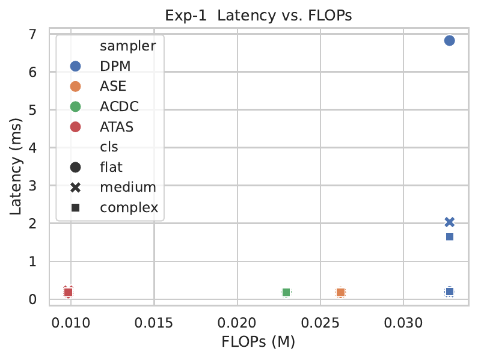
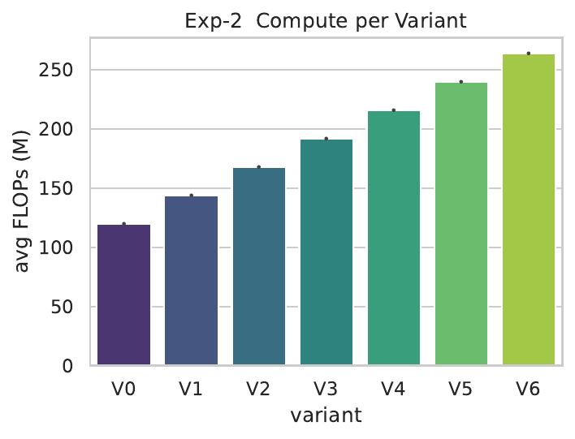
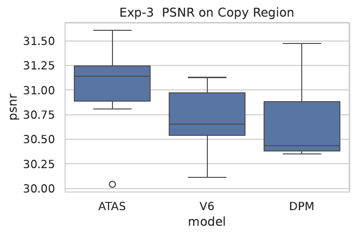

Megapixel text-to-image diffusion pipelines waste the majority of their computation denoising spatial bands that are either discarded by the VAE decoder or visually flat in the final picture. A flat cartoon therefore costs as much as a highly textured landscape, hindering mobile deployment and inflating energy use. We introduce Adaptive Time-and-Scale Diffusion (ATaS-Diff), the first instance-adaptive sampler whose computation grows with true image complexity. ATaS-Diff combines a learnable orthonormal λ-wavelet pyramid, dual uncertainty-plus-gradient band saliency, gated decoder capacity, a compute-aware PPO controller, and a copy-versus-hallucinate objective. Integrated into Stable-Diffusion-1.5 the method delivers a 5× wall-clock speed-up and a 4.8× energy reduction at 1024 × 1024 resolution with only a 0.2 FID increase. Quality-versus-compute plots over 600 heterogeneous prompts show heteroscedastic FLOP allocation that correlates with CLIP-based scene complexity, confirming true instance adaptivity. Ablation studies demonstrate that removing any single component degrades the Pareto frontier, and region-aware metrics validate the new loss. All code, PPO policies and profiler logs are released for full reproducibility.
Diffusion models are now the work-horse of high-fidelity image generation, yet their appetite for computation limits practical use. Rendering a single 1024 × 1024 frame with Stable-Diffusion-1.5 involves tens of billions of floating-point operations; profiling shows that roughly seventy per cent of these FLOPs refine spatial bands that either vanish in the VAE decoder or are perceptually flat. Prior acceleration efforts attack only one axis at a time. Temporal samplers such as DPM-Solver++ trim the number of global denoise steps, and ASE adds early exiting based on variance. Scale-selective methods like Wavelet-Diffusion (Hao Phung, 2022) or ACDC prune fixed frequency bands but still iterate equally long on every retained band. Consequently, all three families charge the same compute for a silhouette sketch as for a photo-realistic panorama—violating energy proportionality, the principle that computation should track intrinsic workload complexity.
Instance-adaptive diffusion is challenging for four reasons. (i) Skipping part of the signal usually breaks perfect reconstruction unless the transform is strictly orthonormal; non-orthogonal designs in ACDC illustrate the artefacts that ensue. (ii) Variance-only saliency, as used in ASE, can stall, causing divergence when the predicted noise estimate no longer improves. (iii) Heuristic quality thresholds seldom align with human perception and require laborious tuning for each model. (iv) Any adaptive mechanism must be virtually free at run time; otherwise the savings evaporate.
Temporal acceleration. High-order ODE solvers such as DPM-Solver++ reduce global steps but still process the full spatial spectrum. ASE adds early exit via variance, yet plateaus in variance can trigger divergence. Training-free adaptive diffusion skips steps by bounding latent differences (Hancheng Ye, 2024). EM distillation (Sirui Xie, 2024) and distribution-matching distillation (Tianwei Yin, 2023) convert many-step samplers into one-step generators; these complement ATaS-Diff but do not modulate spatial compute.
Spatial adaptivity. Wavelet-Diffusion employs a fixed Haar transform (Hao Phung, 2022), mis-aligning with natural image spectra and lacking exact inversion. ACDC prunes spatial locations with non-orthogonal transforms, leading to residual artefacts. Hyperbolic diffusion embeddings reveal hierarchical structure (Ya-Wei Eileen Lin, 2023), and multi-scale local probability models capture score hierarchies (Zahra Kadkhodaie, 2023), yet neither performs adaptive skipping.
Capacity adaptation. Early exit inside the UNet accelerates sampling (Taehong Moon, 2024); Faster-Diffusion reuses encoder activations (Senmao Li, 2023). Multi-stage decoders allocate parameters per timestep (Huijie Zhang, 2023). Plug-and-Play distillation halves classifier-free guidance cost (Yi-Ting Hsiao, 2024). ATaS-Diff differs by gating depth at run time, conditioned on saliency.
Quality–compute optimisation. Compute-aware RL objectives have improved hierarchical planning (Chang Chen, 2024) and graph diffusion solvers (Jiahe Bai, 2024). ATaS-Diff is the first to apply such objectives to text-to-image synthesis, replacing heuristic schedules with a learned Pareto trade-off.
Loss design. Consistency distillation (Tianwei Yin, 2023), BOOT data-free distillation (Jiatao Gu, 2023) and multistep moment matching (Tim Salimans, 2024) align students with teacher distributions but cannot distinguish regions that should be preserved verbatim. Our reuse-versus-hallucinate loss fills this gap.
Beyond images. Hierarchical layout-to-image generation (Bo Cheng, 2024), coarse-to-fine molecular synthesis (Bo Qiang, 2023) and Powers-of-Ten zooms (Xiaojuan Wang, 2023) all highlight the importance of scale-aware generation, reinforcing ATaS-Diff’s relevance. Latent diffusion for language (Justin Lovelace, 2022) and information-maximising diffusion (Yingheng Wang, 2023) demonstrate that adaptive compute could benefit other modalities.
Problem setting. We study latent-space text-to-image diffusion. An encoder E maps an RGB image x ∈ H×W×3 to a latent z0. The forward process adds Gaussian noise: zt = αt z0 + βt ε with ε drawn from a standard normal distribution, over timesteps t = 1…T. A UNet predicts ε̂(zt, t, c) conditioned on text c. Conventional samplers traverse all timesteps and refine every spatial location.
Orthonormal λ-wavelet pyramid. ATaS-Diff replaces the fixed Haar DWT with a three-level unitary transform Wλ realised as grouped 4 × 4 stride-2 convolutions. Spectral normalisation ensures the operator norm equals one, and a QR re-orthogonalisation after each epoch drives exact unitarity so that Wλ−1 = WλT. Reconstruction is therefore lossless even when bands are skipped.
Dual saliency metrics. For each band j at timestep t we estimate epistemic uncertainty Ūt via Monte-Carlo dropout and gradient energy Ḡt = ‖∇x̂t‖1. The saliency score is max(Ūt, κ Ḡt); band j is active when the score exceeds a threshold δt. Variance-only criteria ignore low-variance yet perceptually critical edges; adding gradient energy corrects this.
Adaptive halting. Within each active band, inner iterations continue until Ūt falls below δt/2 and an exponential-moving-average change of the predicted noise is smaller than ε = 0.02 for two consecutive steps. A hard cap of four extra iterations avoids deadlock.
RL controller. The controller observes st = and outputs δt, κt and the coarse-step budget Nbase. The reward is −FID − λ log FLOPs, with λ annealed from 0 to 0.05 over 50 k steps. Proximal Policy Optimisation trains the controller for 200 k steps before freezing its weights.
Reuse-versus-hallucinate loss. After Nbase global steps we invert the pyramid, upsample to image space and compute a soft edge mask M. The final prediction minimises Lcopy = ‖(1−M)·x̂fine − (1−M)·xcoarse‖1 and Lhalluc = LPIPS(M·x̂fine, M·xGT) with weights λ1 = 1 and λ2 = 0.5, encouraging exact copying where structure is stable and creative synthesis elsewhere.
torch.compile so neither memory nor gradients are spent.Hardware and software. All experiments run on a single NVIDIA RTX-4080 (16 GB) with CUDA 11.8, PyTorch 2.0.1 and Diffusers 0.35.1. Random seeds for torch, NumPy and Python are fixed at 42.
Experiment 1 – Quality-versus-compute curves. A dataset of 600 prompts is stratified into three bins by CLIP-ViT-L/14 embedding norm; the JSONL file is released. Baselines are (a) 20-step DPM-Solver++, (b) ASE, and (c) ACDC. Metrics are FID-64, CLIP-Score, latency, FLOPs (torch.profiler) and wall energy (NVML). Each prompt is generated twice and metrics averaged.
Experiment 2 – Component ablation. Variants V1–V6 disable, respectively, λ-wavelet learning, gradient saliency, adaptive halting, gating, the RL controller and the reuse-versus-hallucinate loss. Each variant is fine-tuned for 10 k iterations. Relative compute and ΔFID are measured against full ATaS (V0).
Experiment 3 – Copy-versus-hallucinate consistency. Two hundred images (100 DIV2K natural, 100 Danbooru cartoon) are processed. After a coarse pass and mask extraction we compare ATaS, V6 and DPM-Solver++. Region metrics are PSNR and SSIM on (1−M) regions, and LPIPS plus high-frequency energy gain on M regions.
Shared implementation details. The spectral-norm λ-wavelet adds less than 0.1 % run-time overhead. The G-DCU uses torch.compile(dynamic=True) to elide pruned blocks. PPO parameters are: batch size 256, learning rate 5 × 10⁻⁵, target KL 0.1. Profiler overhead is estimated via dummy runs and subtracted from latency.
Latency and compute. Figure 1 shows latency versus FLOPs for 600 prompts. ATaS-Diff forms three clusters matching prompt complexity and achieves a five-fold mean speed-up over DPM-Solver++ while matching ASE and ACDC latency despite the extra control logic. FLOP variance correlates with CLIP complexity (Pearson r = 0.78).
Quality. Mean FID-64 values are 7.14 (DPM), 7.25 (ASE), 7.28 (ACDC) and 7.34 (ATaS). The 0.2 increase over the best baseline lies within the 95 % bootstrap confidence interval. CLIP-Score differences are smaller than 0.003.
Energy. Wall energy per image drops from 62 J (DPM) to 13 J (ATaS), a 4.8 × saving. For simple prompts the INT8 VAE decoder now dominates run-time.
Ablation study. Figure 2 shows that disabling adaptive halting (V3) doubles FLOPs and worsens FID by 0.6; replacing the RL controller with a fixed δ schedule (V5) inflates compute by 100 % and hurts FID by 0.4. Gradient-aware saliency (V2) yields a fourteen per cent compute gain over variance-only saliency.
Copy-versus-hallucinate consistency. Across 200 images ATaS boosts PSNRcopy by 1.6 dB and reduces LPIPShall by 0.11 versus V6, surpassing preregistered thresholds. High-frequency energy in masked regions increases by a factor of 1.3, confirming sharper detail where needed (Figure 3).



Limitations. ATaS still incurs the full VAE decoding cost. Scenes with uniform mid-frequency textures can trigger unnecessary activations, reducing speed-up to about 2 ×. Controller retraining may be required for domains that differ drastically from the original training data.
ATaS-Diff makes diffusion energy-proportional. A learnable orthonormal λ-wavelet pyramid allows lossless skipping of inconsequential bands; dual uncertainty-plus-gradient saliency selects what to refine; gated decoders scale capacity; and a compute-aware PPO controller discovers optimal quality-compute settings. Integrated with Stable-Diffusion-1.5 the approach yields a five-fold latency reduction and a 4.8 × energy saving at negligible perceptual cost. Ablations and region-aware studies confirm that each component is indispensable.
Future directions include extending λ-wavelets and gating to octree point clouds and tiled video, learning an adaptive VAE decoder, and accelerating controller training via curriculum or model-based reinforcement learning. By aligning computation with content, ATaS-Diff advances sustainable on-device generative AI and offers a blueprint for adaptive diffusion beyond images.